|
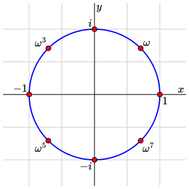
|
<svgfigure id="figure" width="300" height="300" margins="5">
<boundingbox mbox="[-1.4,-1.4,1.4,1.4]" />
<grid id="grid" rx="[-1.5,0.5,1.5]" ry="[-1.5,0.5,1.5]"/>
<group id="axes">
<axes />
<label expr="x" p="[1.4,0]" alignment="northwest" offset="[-3,3]"/>
<label expr="y" p="[0,1.4]" alignment="southeast" offset="[3,-3]"/>
</group>
<circle id="unit-circle" center="[0,0]" r="1" stroke="#00f" thickness="2" />
<group id="one">
<point p="[cos(0*pi/4), sin(0*pi/4)]" size="4" fill="#f00" stroke="#000"/>
<label expr="\text{}1" p="[1,0]" alignment="southeast" offset="[4,-4]"/>
</group>
<group id="omega">
<point p="[cos(1*pi/4), sin(1*pi/4)]" size="4" fill="#f00" stroke="#000"/>
<label expr="\omega" p="[cos(pi/4), sin(pi/4)]" alignment="northeast" offset="[4,4]"/>
</group>
<group id="omega2">
<point p="[cos(2*pi/4), sin(2*pi/4)]" size="4" fill="#f00" stroke="#000"/>
<label expr="i" p="[0,1]" alignment="northwest" offset="[-4,4]"/>
</group>
<group id="omega3">
<point p="[cos(3*pi/4), sin(3*pi/4)]" size="4" fill="#f00" stroke="#000"/>
<label expr="\omega^3" p="[cos(3*pi/4), sin(3*pi/4)]" alignment="northwest" offset="[-3,3]"/>
</group>
<group id="omega4">
<point p="[cos(4*pi/4), sin(4*pi/4)]" size="4" fill="#f00" stroke="#000"/>
<label expr="\text{}-1" p="[-1,0]" alignment="northwest" offset="[-3,3]"/>
</group>
<group id="omega5">
<point p="[cos(5*pi/4), sin(5*pi/4)]" size="4" fill="#f00" stroke="#000"/>
<label expr="\omega^5" p="[cos(5*pi/4), sin(5*pi/4)]" alignment="southwest" offset="[-3,-3]"/>
</group>
<group id="omega6">
<point p="[cos(6*pi/4), sin(6*pi/4)]" size="4" fill="#f00" stroke="#000"/>
<label expr="\text{}-i" p="[cos(6*pi/4), sin(6*pi/4)]" alignment="southwest" offset="[-4,-4]"/>
</group>
<group id="omega7">
<point p="[cos(7*pi/4), sin(7*pi/4)]" size="4" fill="#f00" stroke="#000"/>
<label expr="\omega^7" p="[cos(7*pi/4), sin(7*pi/4)]" alignment="southeast" offset="[3,-3]"/>
</group>
<annotations>
<annotation id="figure" text="The eighth roots of unity">
<annotation id="axes" text="The coordinate axes" />
<annotation id="grid" text="The coordinate grid" />
<annotation id="unit-circle" text="The unit circle">
<annotation id="one" text="one" />
<annotation id="omega" text="The primitive eighth root of unity" />
<annotation id="omega2"/>
</annotation>
</annotation>
</annotations>
</svgfigure>
|
|
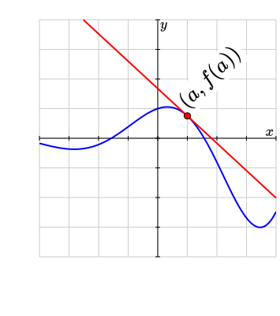
|
<svgfigure id="figure" xml:id="figure-svg" width="300" height="300" margins="[50,75,5,25]">
<boundingbox mbox="[-4,-4,4,4]"/>
<grid id="grid" rx="[-4,1,4]" ry="[-4,1,4]" />
<group id="axes">
<axes hticks="[-4,1,4]" vticks="[-4,1,4]" />
<label expr="x" p="(4,0)" alignment="northwest" offset="(-3,3)"/>
<label expr="y" p="(0,4)" alignment="southeast" offset="(3,-3)"/>
</group>
<variable name="a" value="1" />
<function expr="f(x) = exp(x/3)*cos(x)" />
<group id="graph-tangent">
<graph id="graph" function="f" stroke="#00f" thickness="2" cliptobbox="yes"/>
<tangent-line id="tangent" function="f" point="a" infinite="yes"
stroke="#f00" thickness="2"/>
<group id="point">
<label expr="(a,f(a))" p="(a,f(a))" alignment="northeast"
offset="[4,4]" rotate="45" scale="1.5" clear-background="yes"/>
<point p="(a, f(a))" size="4" fill="#f00" stroke="#000"/>
</group>
</group>
<annotations>
<annotation id="figure"
text="The graph of a function and its tangent line at the point a equals 1">
<annotation id="axes" text="A pair of coordinate axes" />
<annotation id="grid" text="Equally spaced horizontal and vertical grid lines" />
<annotation id="graph-tangent" text="The graph and its tangent line">
<annotation id="graph" text="The graph of the function f" sonify="yes"/>
<annotation id="point" text="The point a comma f of a"/>
<annotation id="tangent" text="The tangent line to the graph of f at the point"/>
</annotation>
</annotation>
</annotations>
</svgfigure>
|
|
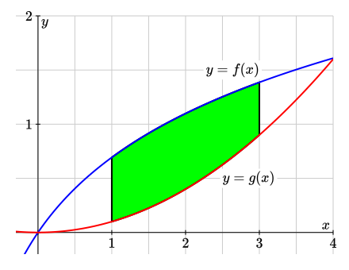
|
<svgfigure id="figure" xml:id="figure-svg"
width="400" height="300" margins="[20,20,20,20]">
<boundingbox mbox="[-0.3,-0.2,4,2]"/>
<grid id="grid" rx="[0,0.5,4]" ry="[0,0.5,2]" />
<group id="axes">
<axes hticks="[0,1,4]" vticks="[0,1,2]"
hlabels="[0,1,4]" vlabels="[0,1,2]" />
<label expr="x" p="(4,0)" alignment="northwest" offset="(-4,4)"/>
<label expr="y" p="(0,2)" alignment="southeast" offset="(4,-4)"/>
</group>
<function expr="f(x) = log(x+1)" />
<function expr="g(x) = 0.1*x^2" />
<area-between-curves id = "area under curve" function1="f" function2="g"
domain="(1,3)"
fill="#0f0" stroke="#000" thickness="2"/>
<graph id="graph" function="f" stroke="#00f"
thickness="2" cliptobbox="yes"/>
<graph id="graph" function="g" stroke="#f00"
thickness="2" cliptobbox="yes"/>
<label expr="y=f(x)" p="(3,1.5)" alignment="west" offset="(0,0)"
clear-background="yes" />
<label expr="y=g(x)" p="(2.5,0.5)" alignment="east" offset="(0,0)"
clear-background="yes" />
</svgfigure>
|
|
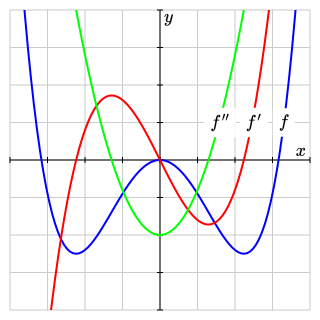
|
<svgfigure id="figure" xml:id="figure-svg" width="300" height="300" margins="10">
<boundingbox mbox="[-4,-4,4,4]"/>
<grid id="grid" rx="[-4,1,4]" ry="[-4,1,4]" />
<group id="axes">
<axes hticks="[-4,1,4]" vticks="[-4,1,4]" />
<label expr="x" p="(4,0)" alignment="northwest" offset="(-4,4)" />
<label expr="y" p="(0,4)" alignment="southeast" offset="(4,-4)" />
</group>
<function expr="f(x)=0.1*(x^4-10*x^2)" />
<derivative name="fp" function="f"/>
<derivative name="fpp" function="fp"/>
<group id="graph-derivatives">
<graph id="f" function="f" stroke="blue" thickness="2" cliptobbox="yes" />
<label expr="f" p="(3.3,1)" alignment="center"
clear-background="yes" background-margin="6" />
<graph id="fp" function="fp" stroke="red" thickness="2" cliptobbox="yes" />
<label expr="f'" p="(2.5,1)" alignment="center"
clear-background="yes" background-margin="6" />
<graph id="fpp" function="fpp" stroke="green" thickness="2" cliptobbox="yes" />
<label expr="f''" p="(1.6,1)" alignment="center"
clear-background="yes" background-margin="6" />
</group>
<annotations>
<annotation id="figure" text="The graph of a function and its first two derivatives">
<annotation id="axes" text="The coordinate axes" />
<annotation id="grid" text="The coordinate grid" />
<annotation id="graph-derivatives"
text="The graph of f, its derivative f prime, and its second derivative f double prime">
<annotation id="f" text="The graph of f" sonify="yes"/>
<annotation id="fp" text="The graph of the derivative of f"
sonify="yes" />
<annotation id="fpp" text="The graph of the second derivative of f"
sonify="yes"/>
</annotation>
</annotation>
</annotations>
</svgfigure>
|
|
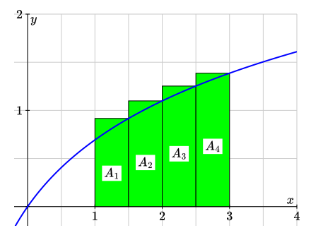
|
<svgfigure id="figure" xml:id="figure-svg" width="400" height="300" margins="[20,20,20,20]">
<boundingbox mbox="[-0.2,-0.2,4,2]"/>
<grid id="grid" rx="[0,0.5,4]" ry="[0,0.5,2]" />
<group id="axes">
<axes hticks="[0,1,4]" vticks="[0,1,4]" hlabels="[0,1,4]" vlabels="[0,1,2]"/>
<label expr="x" p="(4,0)" alignment="northwest" offset="(-4,4)"/>
<label expr="y" p="(0,2)" alignment="southeast" offset="(4,-4)"/>
</group>
<function expr="f(x) = log(x+1)" />
<riemann-sum id = "riemann sum" function="f" domain="(1,3)" rule="right"
style="left" N="4" fill="green" stroke="black" width="1"/>
<graph id="graph" function="f" stroke="blue" thickness="2" cliptobbox="yes"/>
<label id="a1" expr="A_1" p="(1.25, 0.5*f(1))" alignment="center"
clear-background="yes" />
<label id="a2" expr="A_2" p="(1.75, 0.5*f(1.5))" alignment="center"
clear-background="yes" />
<label id="a3" expr="A_3" p="(2.25, 0.5*f(2))" alignment="center"
clear-background="yes" />
<label id="a4" expr="A_4" p="(2.75, 0.5*f(2.5))" alignment="center"
clear-background="yes" />
</svgfigure>
|
|
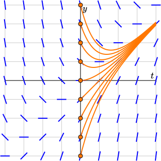
|
<svgfigure xml:id="figure-svg" width="300" height="300" margins="10">
<boundingbox mbox="[-4,-4,4,4]"/>
<grid rx="[-4,1,4]" ry="[-4,1,4]" />
<axes hticks="[-4,1,4]" vticks="[-4,1,4]" />
<function expr="f(t,y) = t-y" />
<slope-field id="slope-field" function="f" rx="(-4,1,4)" ry="(-4,1,4)"
stroke="blue" thickness="2"/>
<loop var="k" start="-4" stop="4">
<de-solution id="de-solution" function="f" y0="k" domain="[0,4]"
stroke="orange" thickness="2"/>
<point id="initial-value" p="(0,k)" size="4" fill="orange" stroke="black"/>
</loop>
<label expr="t" p="(4,0)" alignment="northwest" offset="(-4,4)" />
<label expr="y" p="(0,4)" alignment="southeast" offset="(4,-4)" />
</svgfigure>
|
|
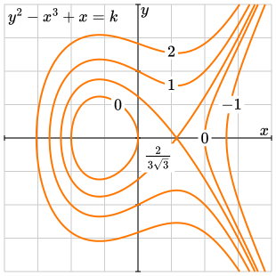
|
<svgfigure id="figure" xml:id="figure-svg" width="300" height="300" margins="[5,5,5,5]">
<boundingbox mbox="[-2,-2,2,2]"/>
<grid id="grid" rx="[-2,0.5,2]" ry="[-2,0.5,2]" />
<group id="axes">
<axes hticks="[-2,1,2]" vticks="[-2,1,2]" />
<label expr="x" p="(2,0)" alignment="northwest" offset="(-3,3)"/>
<label expr="y" p="(0,2)" alignment="southeast" offset="(3,-3)"/>
</group>
<function expr="f(x,y) = y^2 - x^3 + x" />
<function expr="g(x) = x^3 - x" />
<implicit-curve id="implicit" function="f" k="-1"
stroke="orange" thickness="2"/>
<implicit-curve id="implicit" function="f" k="0"
stroke="orange" thickness="2"/>
<implicit-curve id="implicit" function="f" k="g(-sqrt(1/3))"
stroke="orange" thickness="2"/>
<implicit-curve id="implicit" function="f" k="1"
stroke="orange" thickness="2"/>
<implicit-curve id="implicit" function="f" k="2"
stroke="orange" thickness="2"/>
<label id="function expr" expr="y^2 - x^3 + x = k" p="(-2,2)"
alignment="southeast" offset="(4,-4)" />
<label id="function expr" expr="\text{}1" p="(0.5,0.8)"
alignment="center" clear-background="yes" />
<label id="function expr" expr="\text{}0" p="(-0.3,0.5)"
alignment="center" clear-background="yes" />
<label id="function expr" expr="\text{}0" p="(1,0)"
alignment="center" clear-background="yes" />
<label id="function expr" expr="\text{}-1" p="(1.4,0.5)"
alignment="center" clear-background="yes" />
<label id="function expr" expr="\frac{2}{3\sqrt{3}}" p="(0.3,-0.3)"
alignment="center" clear-background="yes" />
<label id="function expr" expr="\text{}2" p="(0.5,1.3)"
alignment="center" clear-background="yes" />
</svgfigure>
|
|
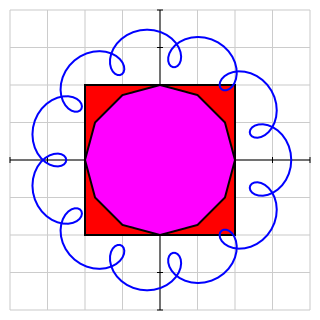
|
<svgfigure xml:id="figure-svg"
width="300" height="300" margins="10">
<boundingbox mbox="[-4,-4,4,4]"/>
<grid rx="[-4,1,4]" ry="[-4,1,4]" />
<axes hticks="[-4,1,4]" vticks="[-4,1,4]" />
<polygon id="square" points="((-2,-2),(2,-2),(2,2),(-2,2))"
closed="yes" fill="red" stroke="black" thickness="2"/>
<polygon id="polygon" points="(2*cos(k*pi/6), 2*sin(k*pi/6))"
parameter="k=0..12" closed="yes" fill="magenta"
stroke="black" thickness="2"/>
<function expr="x(t) = 3*cos(t)+0.5*cos(12*t)" />
<function expr="y(t) = 3*sin(t)+0.5*sin(12*t)" />
<parametric-curve x="x" y="y" domain="(0,2*pi)" stroke="blue"
N="200" thickness="2"/>
</svgfigure>
|
|
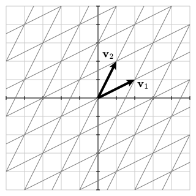
|
<svgfigure xml:id="figure-svg" width="300" height="300" margins="10">
<variable name="size" value="5" />
<variable name="v1" value="(2,1)" />
<variable name="v2" value="(1,2)" />
<boundingbox mbox="[-size,-size, size, size]" />
<grid rx="[-size,1,size]" ry="[-size,1,size]" />
<axes hticks="[-size,1,size]" vticks="[-size, 1, size]" />
<coordinate-system v1="v1" v2="v2" stroke="gray"/>
<vector v="v1" fill="black" />
<vector v="v2" fill="black" />
<label expr="{\mathbf v}_1" p="v1" alignment="southeast" offset="(4,-4)" />
<label expr="{\mathbf v}_2" p="v2" alignment="northwest" offset="(-4,4)" />
</svgfigure>
|
|
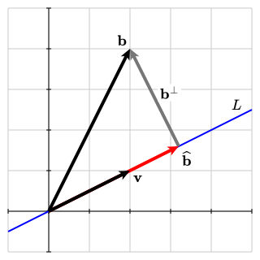
|
<svgfigure xml:id="figure-svg" width="300" height="300" margins="10">
<variable name="llx" value="-1" />
<variable name="lly" value="-1" />
<variable name="urx" value="5" />
<variable name="ury" value="5" />
<variable name="v" value="(2,1)" />
<variable name="b" value="(2,4)" />
<variable name="bhat" value="smult(dot(v,b)/dot(v,v), v)" />
<variable name="bperp" value="vdiff(b,bhat)" />
<boundingbox mbox="[llx, lly, urx, ury]" />
<grid rx="[llx,1,urx]" ry="[llx,1,ury]" />
<axes hticks="[llx,1,urx]" vticks="[lly, 1, ury]" />
<line p1="(0,0)" p2="v" infinite="yes" stroke="blue" thickness="2"/>
<vector v="bperp" tail="bhat" fill="gray"/>
<vector v="bhat" fill="red" />
<vector v="v" fill="black" />
<vector v="b" fill="black" />
<label expr="{\mathbf v}" p="v" alignment="southeast" offset="(4,-6)" />
<label expr="{\mathbf b}" p="b" alignment="northwest" offset="(-4,4)" />
<label expr="\widehat{\mathbf b}" p="bhat" alignment="southeast" offset="(4,-4)" />
<label expr="{\mathbf b}^\perp" p="smult(0.5, vsum(b,bhat))"
alignment="east" offset="(7,6)" clear-background="yes"/>
<label expr="L" p="(4.5,2.5)" />
</svgfigure>
|
|
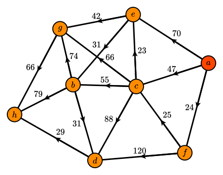
|
<svgfigure xml:id="figure-svg" width="400" height="300" margins="30">
<network id="path-network" edgedefault="directed" seed="1">
<node id="a" label="a" fill="orangered" />
<node id="b" label="b" />
<node id="c" label="c" />
<node id="d" label="d" />
<node id="e" label="e" />
<node id="f" label="f" />
<node id="g" label="g" />
<node id="h" label="h" />
<edge source="a" target="f" id="af" weight="24" />
<edge source="a" target="c" id="ac" weight="47" />
<edge source="a" target="e" id="ae" weight="70" />
<edge source="f" target="d" id="fd" weight="120" />
<edge source="f" target="c" id="fc" weight="25" />
<edge source="c" target="d" id="cd" weight="88" />
<edge source="c" target="b" id="cb" weight="55" />
<edge source="c" target="e" id="ce" weight="23" />
<edge source="c" target="g" id="cg" weight="66" offset="(12, -4)"/>
<edge source="e" target="b" id="eb" weight="31" />
<edge source="e" target="g" id="eg" weight="42" />
<edge source="d" target="h" id="dh" weight="29" />
<edge source="b" target="d" id="bd" weight="31" />
<edge source="b" target="h" id="bh" weight="79" />
<edge source="b" target="g" id="bg" weight="74" />
<edge source="g" target="h" id="gh" weight="66" />
</network>
</svgfigure>
|